Case study 01 · Webjet (ASX:WEB)
Unblocking a purchase-path dead-end worth half a million a month
Customers searching for an international flight landed on a screen where every returning flight appeared unavailable. This high-traffic flow needed a leader to deliver a derisked solution.
A dead end that looked like a bug
Webjet has an unique user interface for selecting flights internally called 'the matrix'.
Depending on the underlying fare structure, some or all international return fares get marked with a small ‘R’ icon. Select one, and most prices in the returning matrix greyed out – because only a handful of returning flights were valid with that fare. Nothing explained this. Customers had to hunt the grid for the one matching price.
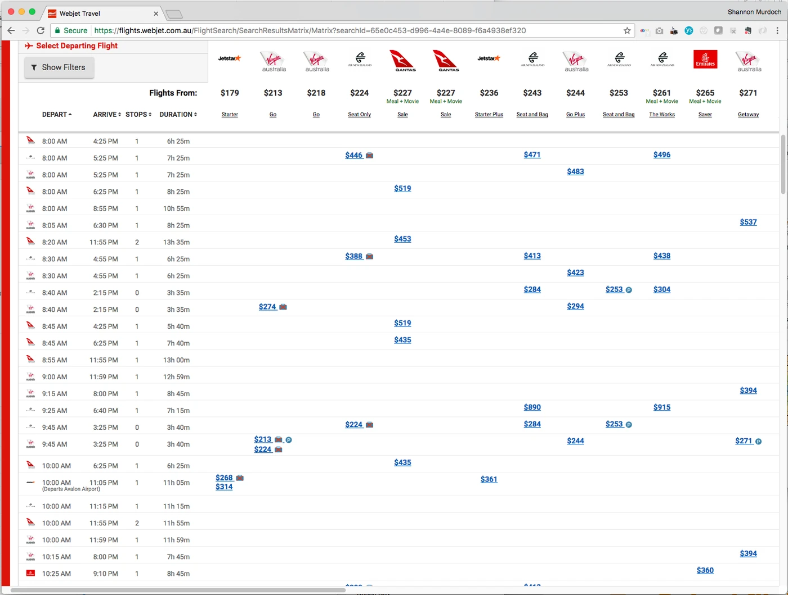
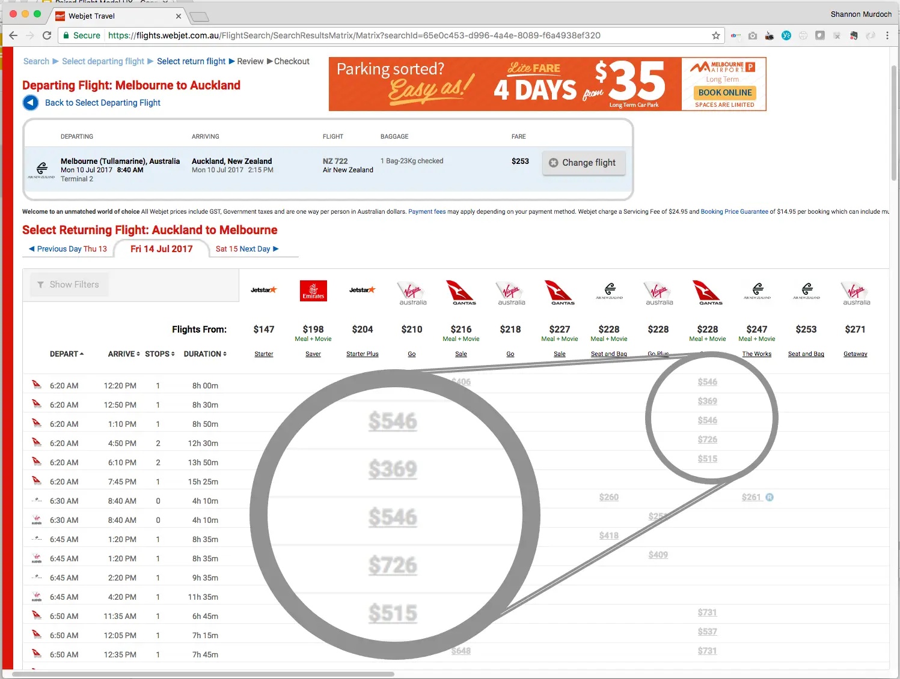
The real problem
Customers concluded the site was broken or sold out, and left. This was a usability issue silently & continually impacting revenue.
What I inherited: three solutions, none built
The working method I’d implemented for product design projects at Webjet is called the Double Diamond. The method ensures a comprehensive understanding of the problem space is achieved before moving into the solution phase, and that ideation is separated from evaluation.
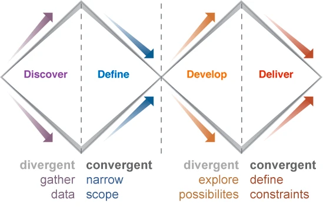
For this project the product team had already discussed the issue at length and sketched proposals were sitting on the server from June 2014, eight months before I joined.
As the problem definition was clear (Discover & Define complete) and the team had already explored potential solutions (Develop), I decided to focus on validating the ideas (Deliver).
Initial ideation:
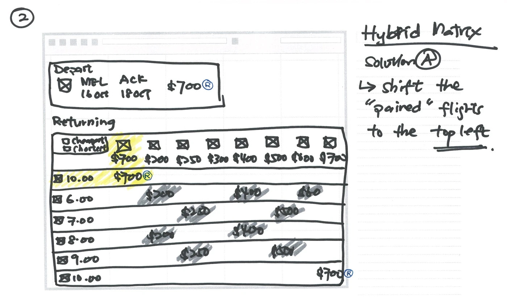
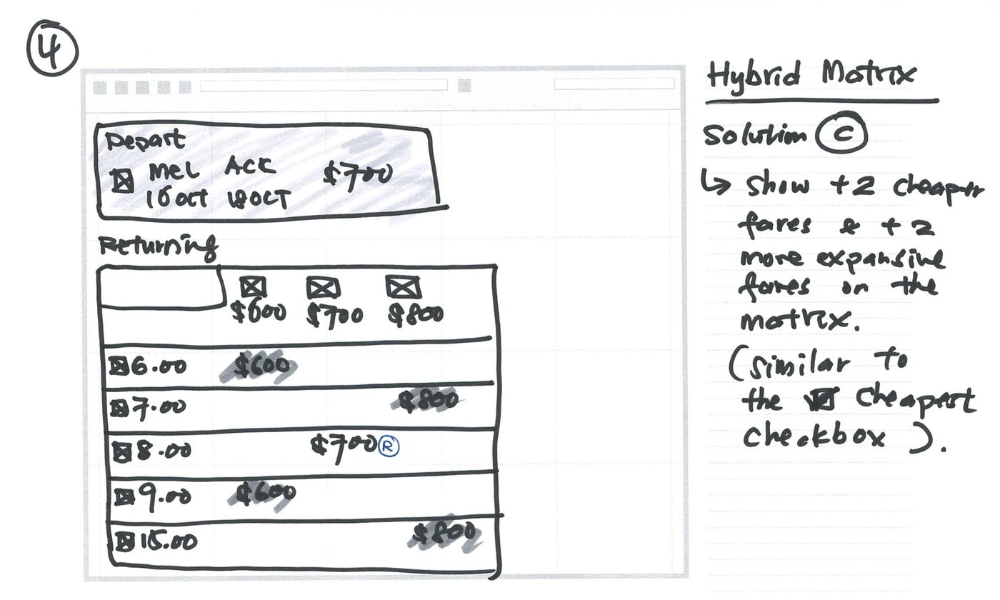
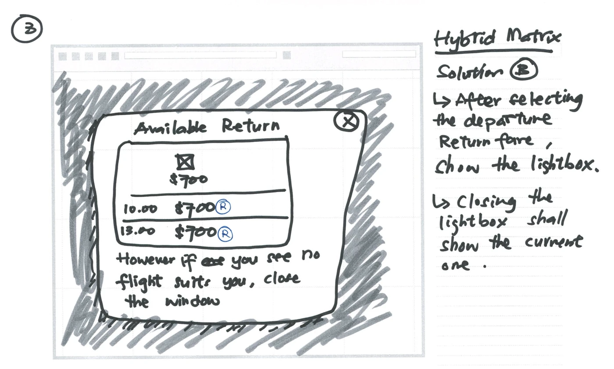
The product team had mocked up Solution C in January 2015 but it stalled as it was a significant change to a revenue-critical flow, and nobody could say with confidence that customers would understand it.
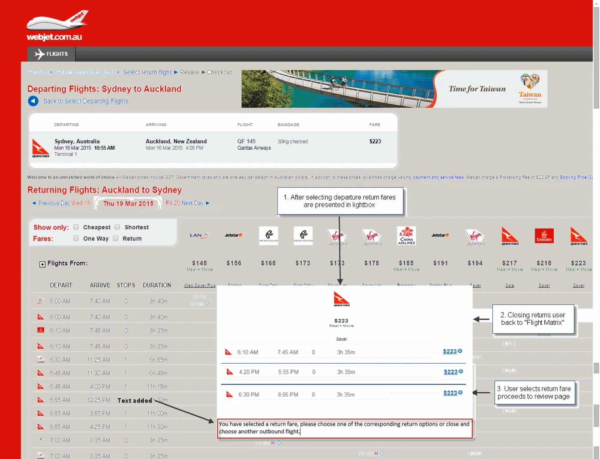
Decision: skip discovery, spend the time on validation
The problem was well understood and a solution direction already had internal agreement. Re-running discovery would have rendered no new information. What was missing was evidence that people could actually use it — so I moved the entire budget for this project downstream into prototype testing.
How I approached it
I picked the project up in March 2016, while working through a broader set of usability issues in the matrix results interface. First move was a mockup built to the UI Pattern Library standards that I’d established the year prior.

Prototype and task design
Prior to this project I secured an annual budget for remote usability studies. I hadn’t tested the Matrix, so my first scenario was a plain cheapest-flight task that would give us general feedback on this unique interface.
The second scenario focused on the new modal I’d created.
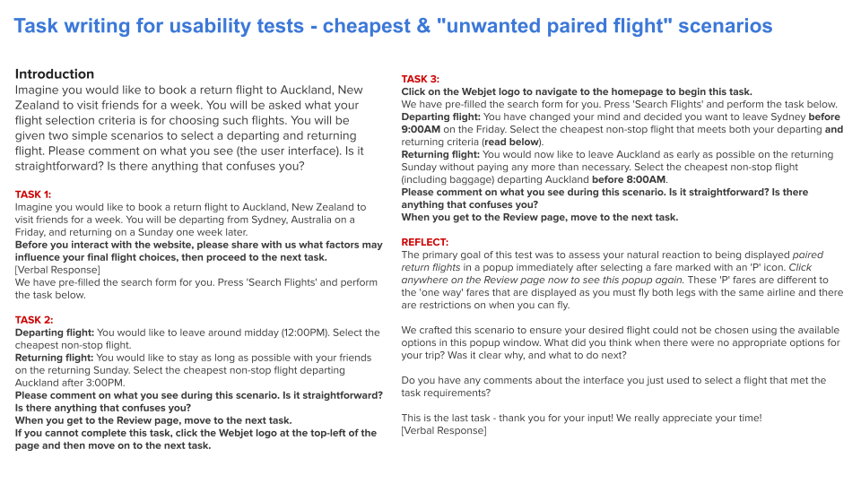
Writing unmoderated usability study plans is an art. You have to empower the participant with a relatable scenario, extract their mental model, and craft tasks that avoid leading the customer or encouraging unnatural behaviour. I used the opening task to capture their mental model — asking what factors would drive their choice before they saw any UI. Where the interface and the mental model diverge is where the usability problems often live.
The final task revealed what we’d been testing and invited them to share what they thought of it. That final 'reflection' prompt produced some of the most useful insights as it invited the participant to be a co-creator (and not slam the door once the study was complete).
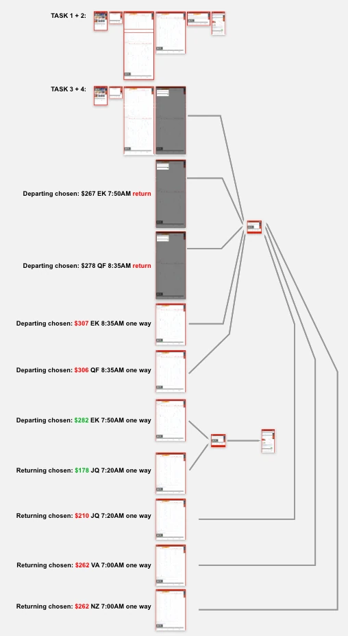
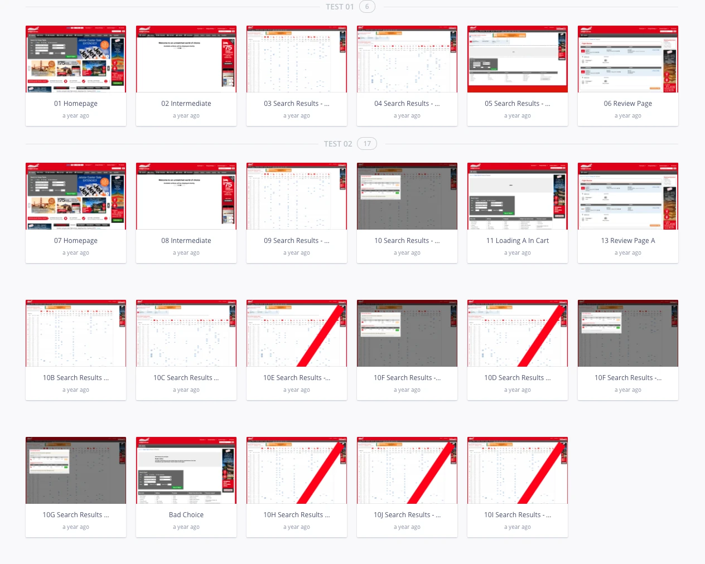
At the time, Invision App was the preferred tool for creating simple interactive prototypes. Now, Figma-integrated prototyping solutions are abundant.
Decision: test the worst case, not the happy path
My testing plan deliberately forced people into the modal and guaranteed it would not contain a flight matching their requirements. It was essential to test this failure path to ensure the solution would be effective in real-world use.
Four rounds, and the round that broke the deadlock
Each round: unmoderated remote studies through UserTesting.com, observations written up, changes made, retest.
The pattern-library mockup
What I tested
- Modal on fare selection, ‘R’ icon retained, icon description and instructions present
What happened
- People were confused about why they were seeing the modal, and what to do if they didn’t like the options — the same failure as the flow we were replacing
- “Was the total $254, or 2 × $254?”
- The ‘R’ icon meant nothing. Nobody read the description or the instructions
Read
- Steve Krug’s insight from his book Don’t Make Me Think — “people don’t read, they scan” — was evidenced loud & clear.
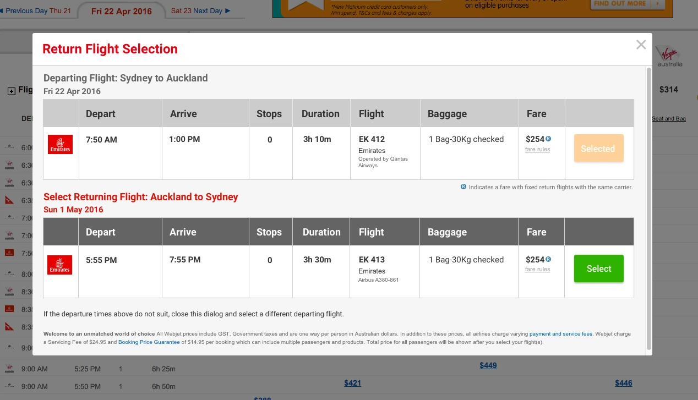
Big explainer strip
What I changed
- Added a prominent strip across the top explaining the ‘R’ and what to do if the options didn’t suit
- Prefixed the second price with ‘+’
What happened
- The ‘+$254’ killed the total-versus-extra confusion outright
- “Return fare” didn’t resonate — to customers every flight they were booking was a return fare. I needed a different word
- Prominent or not, people still didn’t read it. Too wordy
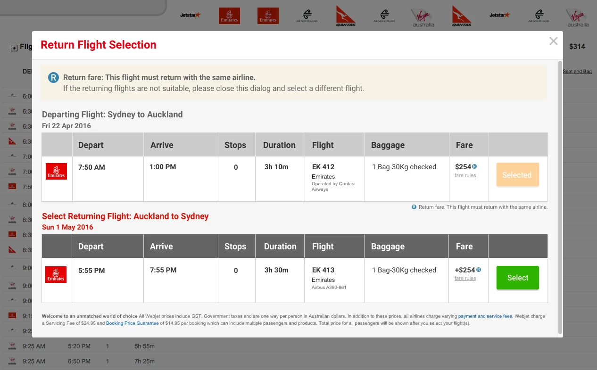
More direction (the wrong lever)
What I changed
- Added more direction to the explanation and italicised the next steps
What happened
- Still unread. Still confused about why the modal appeared
- Too much to absorb at a glance — I had responded to “they don’t understand” by writing more words, rather than 'chunking' information delivery
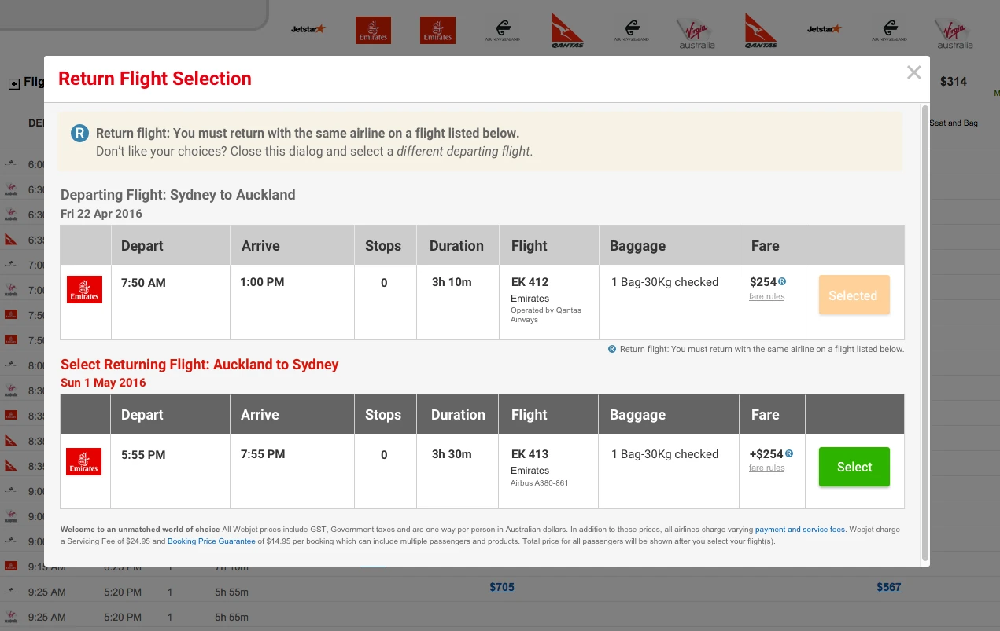
New word, split message
What I changed
- Renamed the concept: ‘R’ for Return Flight became ‘P’ for Paired Flight
- Split the explainer into two separate parts — what this is, and what to do if you don’t want it
What happened
- “Paired flight” landed. It was a new term, so people had no competing prior meaning to fight
- Separating explanation from next-step meant each was short enough to be scanned rather than skipped
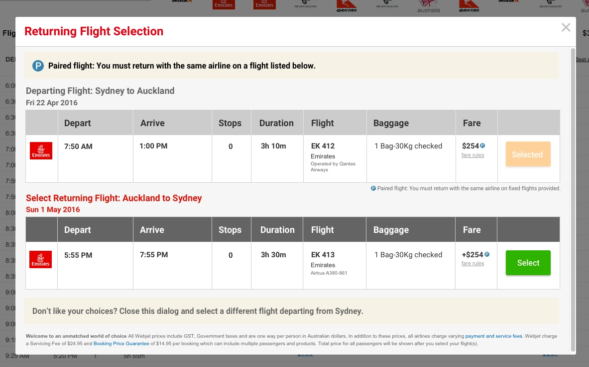
The insight that unlocked it
Three rounds of failure were all the same failure: I was trying to explain an unfamiliar concept using a familiar phrase. “Return fare” already meant something to customers, so my explanation was competing with their existing definition and losing. Inventing “paired flight” gave the concept a label with no prior meaning attached — and suddenly the explanation had somewhere to land. The nomenclature outlived the project and became the standard term across Webjet’s flight products.
The design that shipped
Round four validated the concept. The remaining work was craft: tightening vertical space, and handling some messy real-world cases the mockups had overlooked.
- Higher-contrast next-step instruction
- Compressed vertically so more flight options sat above the fold
- Flight details pop-over on hover, as per Matrix convention
- Peeking for three or more options (show half a row plus the scrollbar so people know to keep going)

What it was worth
Event tracking went in with the interface, so we could read the conversion shift by matrix type (which changes depending on the searched flight route).
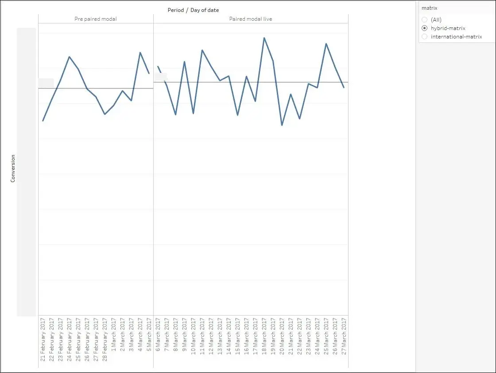
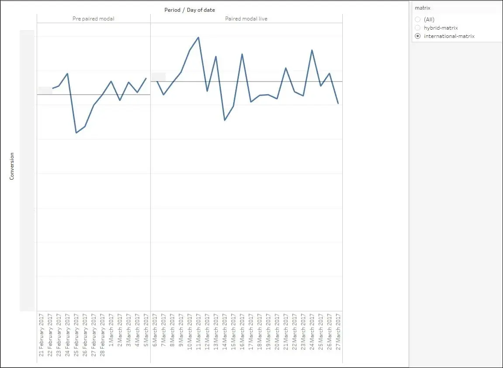
Outcome
≈ +$500,000 AUD in total transaction value every month, from resolving a single usability dead-end. The uplift was twice as large where the modal was unavoidable.
The research also travelled. The paired-flight insights and terminology fed straight into the mobile flights redesign that ran alongside it, which saved that project several rounds of relearning the same lesson on a smaller screen.
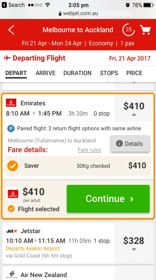
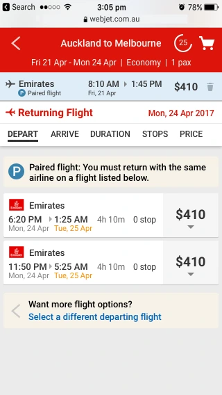
Future enhancements
Once the initial implementation was complete, additional usability enhancements were identified, which were added to the product backlog:
- Make opening and closing the modal instant, with no page scroll. A platform limitation at the time, that distracted customers and added to the cognitive load.
- Turn dismissed paired fares purple — the web-standard visited-link colour (purple) is a strong visual cue that the option has been seen and rejected — so people don’t reopen options they’ve already rejected. Cheap, and it removes real cognitive load.
- Combine matrix columns for same-flight paired fares. Two fares departing at the same time on the same carrier don’t need two columns; merging them reduces the horizontal sprawl that makes the matrix hard to scan in the first place.
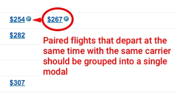
What I learned
Four things I took from this
- People don't read - they scan. Chunking information into smaller, scannable pieces improves comprehension and decision-making.
- Don't be afraid to coin your own terms. The “Paired flight” term worked precisely because nobody arrived with a definition of it.
- Leverage the familiar. Building using the internal UI Pattern Library accelerated protoype production & allowed me to focus on the user experience.
- Measure your impact. Having a reliable baseline and the ability to segment based on what users experience helps justify future spend on Product research.